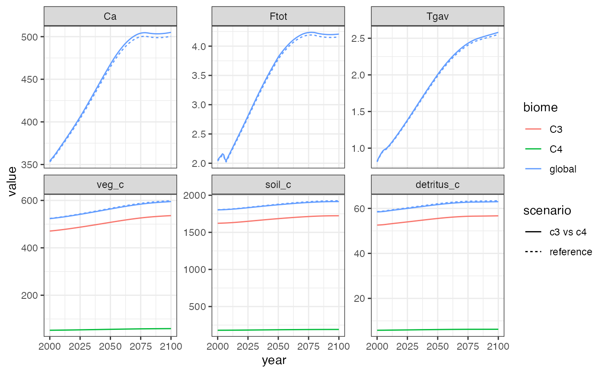

Running Hector with multiple biomes
Alexey Shiklomanov
2019-06-27
multiple-biomes.RmdBy default, Hector’s carbon cycle model treats the entire land surface as a single, homogeneous ecosystem. However, it is possible to introduce some land surface heterogeneity by splitting the land surface into several different biomes with distinct parameters. In this vignette, we show two examples of performing multi-biome analyses with Hector.
This vignette assumes some familiarity with the Hector model and its R interface. For help on the former, consult the Hector manual, and on the latter, see the introductory vignette.
Before we begin, let’s load the R package we will need: the hector package to interact with Hector, and the ggplot2 package for plotting.
Example 1: Accelerated high-latitude warming
Observational and modeling studies have found that high-latitude ecosystems, particularly in the northern hemisphere, are warming significantly faster than the global average. In this example, we will explore the implications of this effect with Hector.
First, let’s run a reference case.
rcp45 <- system.file("input", "hector_rcp45.ini", package = "hector") core <- newcore(rcp45, suppresslogging = TRUE) invisible(run(core, 2100)) result_vars <- c(ATMOSPHERIC_CO2(), RF_TOTAL(), GLOBAL_TEMP(), VEG_C(), SOIL_C(), DETRITUS_C()) reference_results <- fetchvars(core, 2000:2100, result_vars, scenario = "reference")
Now, let’s redo the run, but accounting for accelerated high-latitude warming. To do this, we will use the split_biome() function, which takes an existing Hector biome and splits it up into an arbitrary number of new biomes, partitioning the C pools and initializing parameters accordingly. For the purposes of this example, let’s assume that high latitudes have ~10% of the world’s vegetation and detritus carbon and ~40% of world’s soil carbon, and that high-latitudes are warming 2.5x faster than the global average.
invisible(reset(core)) split_biome(core, "global", c("low-latitude", "high-latitude"), fveg_c = c(0.9, 0.1), fdetritus_c = c(0.9, 0.1), fsoil_c = c(0.6, 0.4), warmingfactor = c(1, 2.5)) invisible(run(core, 2100)) warming_results <- fetchvars(core, 2000:2100, result_vars, scenario = "warming")
Now, let’s plot the results.
plot_data <- rbind(reference_results, warming_results) plot_data$variable <- factor(plot_data$variable, result_vars) ggplot(plot_data) + aes(x = year, y = value, color = scenario) + geom_line() + facet_wrap(vars(variable), scales = "free_y") + theme_bw()
Hector results with vs. without accelerated high-latitude warming.
The results show that accelerated high-latitude warming induces a positive global feedback in Hector: The warmer high-latitudes respire carbon from soil and detritus at a faster rate, which leads to higher CO2 concentrations and further warming.
We can look at these results in more detail by examining the biome-specific pools and fluxes via the optional biome argument to Hector’s identifier functions (e.g. VEG_C()).
warming_details <- fetchvars(core, 2000:2100, c(VEG_C("low-latitude"), VEG_C("high-latitude"), DETRITUS_C("low-latitude"), DETRITUS_C("high-latitude"), SOIL_C("low-latitude"), SOIL_C("high-latitude")), scenario = "warming") head(warming_details)
## scenario year variable value units
## 1 warming 2000 low-latitude.veg_c 474.8797 Pg C
## 2 warming 2001 low-latitude.veg_c 475.3750 Pg C
## 3 warming 2002 low-latitude.veg_c 475.8733 Pg C
## 4 warming 2003 low-latitude.veg_c 476.3748 Pg C
## 5 warming 2004 low-latitude.veg_c 476.8836 Pg C
## 6 warming 2005 low-latitude.veg_c 477.4029 Pg CFor plotting, let’s split up the variable column into its components – biome and variable.
variable_split <- strsplit(warming_details$variable, ".", fixed = TRUE) warming_details$biome <- factor(vapply(variable_split, "[[", character(1), 1), c("low-latitude", "high-latitude")) warming_details$variable <- vapply(variable_split, "[[", character(1), 2) ggplot(warming_details) + aes(x = year, y = value, color = biome) + geom_line() + facet_wrap(vars(variable), scales = "free_y") + theme_bw()

Example 2: C3 and C4 plants
We can conduct a similar experiment to the one above by looking at the differential impact of CO2 fertilization on C3 and C4 plants. Specifically, C4 plants possess a special mechanism for concentrating CO2 inside their leaves, thereby reducing their sensitivity to changes in atmospheric CO2. Although this makes C4 plants more efficient (particularly in hot and dry environments), this also means that they should have a reduced CO2 fertilization effect compared to C3 plants.
In Hector, the CO2 fertilization effect is controlled by the parameter \(\beta\) (BETA()). In this example, we will create two “biomes”, corresponding to C3 and C4 plants, each with different BETA() values, and will compare model outputs from this special case against a reference case (which we can recycle from the reference_results object in the previous example). For the purposes of this example, we will assume that ~10% of the world’s terrestrial carbon is associated with C4 plants, and that the CO2 fertilization effect for C4 plans is half as strong as that of C3 plants.
core <- newcore(rcp45, suppresslogging = TRUE) split_biome(core, "global", c("C3", "C4"), fveg_c = c(0.9, 0.1), beta = c(0.36, 0.18)) invisible(run(core, 2100)) c4_results <- fetchvars(core, 2000:2100, result_vars, scenario = "c3 vs c4") c4_results_biome <- fetchvars(core, 2000:2100, c(VEG_C("C3"), VEG_C("C4"), DETRITUS_C("C3"), DETRITUS_C("C4"), SOIL_C("C3"), SOIL_C("C4")), scenario = "c3 vs c4") variable_split <- strsplit(c4_results_biome$variable, ".", fixed = TRUE) c4_results_biome$biome <- vapply(variable_split, "[[", character(1), 1) c4_results_biome$variable <- vapply(variable_split, "[[", character(1), 2) c4_results$biome <- "global" reference_results$biome <- "global" plot_data <- rbind(reference_results, c4_results, c4_results_biome) plot_data$variable <- factor(plot_data$variable, result_vars) ggplot(plot_data) + aes(x = year, y = value, linetype = scenario, color = biome) + geom_line() + facet_wrap(vars(variable), scales = "free_y") + theme_bw()

Similarly to accounting for high-latitude warming, accounting for the reduced CO2 fertilization effect on C4 plants results in a slightly warmer and CO2-rich atmosphere.